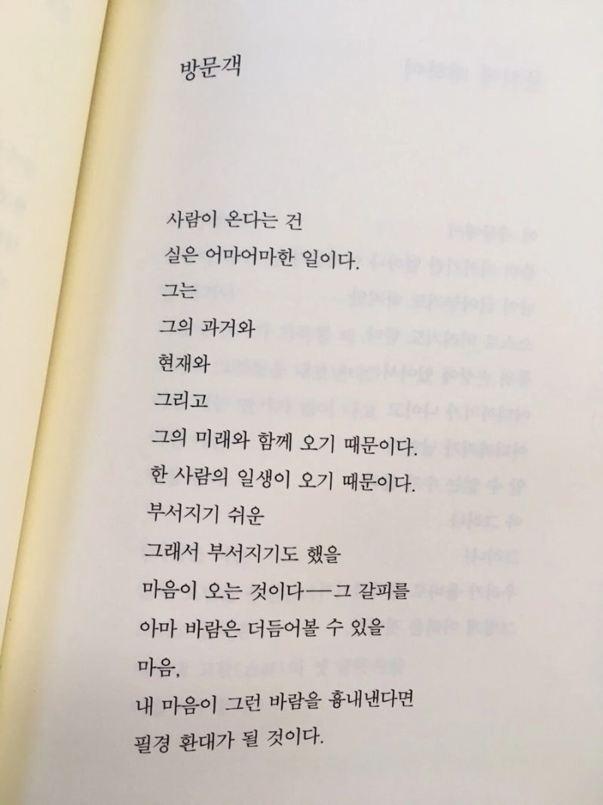

안녕하세요.
95년생 게임회사에서 일 하며 사는 윤재훈이라고 합니다.
처음 당신의 글을 정독한 순간
당신이 남겨놓은 텍스트는 무겁게 닻처럼 내려앉아 내 오래된 기억의 지층을 흔들었습니다.
어떻게 나를 전해야 흔한 기성품에서 벗어날까 많은 고민을 했지만
그냥 적는 수 밖에 없는 것 같습니다.
사람들은 왜 결핍을 사랑할까? 라는 질문을 해야겠습니다.
어릴 적 영화 ‘헤드윅’을 보았던 기억이 있습니다.
성전환에 실패한 트랜스젠더 로커 헤드윅이 자신의 반쪽을 찾는 여정에 대한 얘기입니다.
나중에 알게된 사실이지만, 극 중 삽입곡 The Origin of Love 가사에는 플라톤의 ‘향연’에 나오는 신화를 바탕으로, 원래 하나였던 인간이 신의 분노로 둘로 쪼개져 평생 자신의 반쪽을 찾아 헤맨다는 내용이 담겨 있습니다.
주인공인 헤드윅은 어린 시절 아버지 및 수많은 남자들에게 성폭행을 당했으며
성인이 된 이후 미군 남성과 사랑에 빠져 여성으로 성전환까지 했으나 결국 타지에서 버림 받았습니다.
계속된 인간 관계로 헤드윅은 정신적으로 피폐해지고 사랑을 절실히 원하지만 고통받습니다.
영화 헤드윅은 어린 나이에 지루하고 이해할 수도 없는 내용 투성이었지만 어째서인지 이 영화는 저의 뇌리 깊숙히 박혀있습니다.
아직까지도 어떤 장면들은 기억 속에서 선명하게 살아있기도 합니다.
마음을 터놓을 친구가 없고 내면이 공허한 저는 아마도 미디어 매체를 통해 소속감을 느꼈던 것 같습니다.
나를 닮은 사람은 어딘가에 존재하고 나는 혼자가 아니구나.
지금의 나를 만든 가장 오래된 뿌리는 싫어도 아버지, 좋아도 아버지입니다.
나의 가장 오래된 기억은 경찰이 엄마와 아빠를 데려가는 것입니다.
그 다음의 기억은 엄마가 떠나고 온기만 남아있던 빈 이부자리입니다.
반추하고 싶지 않은 어린 시절들이 널부러져 있습니다.
몇 년 전까지만 해도 이 세상은 그저 잔인하다고만 느꼈습니다.
특히 여름 새벽녘의 푸르죽죽한 하늘을 볼 때면 더더욱 그렇게 느꼈습니다.
초등학생 시절 아버지가 심야에 데려갔던 텅 빈 노래방
세 칸 남짓의 의자에서 홀로 쭈구려 쪽잠을 잤습니다.
잠을 깨워 인사를 건넨 여자의 정체는 우리 집 내가 보는 앞에서 아버지와 성관계를 하던 그 여자였습니다.
그 후로 저는 10년이 넘는 세월 동안 여성을 기피하게 되었습니다.
다행히 첫 여자친구는 제 인생에 전환점이 되어줬습니다.
세상은 아름답고 살만한 가치가 있는 것이구나 그제서야 처음 느꼈습니다.
1500일 동안 두 번 태어나도 그 보다 더 잘 할 자신이 없을 만큼 모든 노력을 다했습니다.
어느 한 번은 아름답지만 정신병자에 사이코패스인 여자를 사랑하게 되었습니다.
살면서 그런 노력은 두 번은 못하곘지 했는데 또 사랑하게 되니 몸이 알아서 움직였습니다.
하지만 어째서인지 그 사람이 행복해지면 우리 사이는 더욱 단단해질 줄 알았지만
그 이는 더 이상 저를 필요로 하지 않게 되자 다른 남자와 잠을 잤고 그게 마지막이 되었습니다.
그러다 일 년이 더 지나고 나니 서른 두살의 윤재훈이 앞에 놓여져 있었습니다.
그 중에 성공한 사랑은 없었지만 그 시간들은 제 마음의 양식이 되어줬습니다.
내 능력과 열정을 바칠 수 있는 일을 찾았고
과거에서 벗어나 삶을 헤쳐나갈 수 있는 지혜와 자신감을 배웠고
내가 진정으로 원하는 상대방은 어떤 성향인지 명확해졌고
(이전보단) 허전함에 목메지 않는 마음의 여유가 생겼습니다.
그럼에도 불구하고 이따금씩 마음의 구멍이 생기는 것은 어쩔 도리가 없습니다.
지금의 나는 과거의 나에게서 비롯됐기 때문이라고 생각해요.
텍스트일 뿐이지만 이선님의 결핍이 무척 아름답다고 느꼈습니다.
몇 번이고 돌려보는 아련한 영화처럼 마음 한 켠에 남아 맴돌고 있습니다.
성향에 대해서도 작은 지분으로 묘사하셨지만 인간적인 매력이 앞서는 분이라고 느껴집니다.
단순히 아픔이 많고 모성애를 자극한다는 이유 때문이 아닌,
나와 비슷한 길을 걸었던 사람이 아닐까라는 막연한 소속감에서 비롯된게 아닐까 생각해요.
물론 그런 매력을 가진 분이시기에 무수히 많은 추천을 받으신거겠지요.
그렇기에 아무래도 역시 편지를 쓰는 것에 의의를 두고 만족해야 할 것 같습니다.
편지 최하단에 링크를 남기긴 했으나 굳이 들어오지 않으셔도 괜찮습니다.
그저.. 가끔 시 쓰는 것을 좋아하는데 당신에게 전해주고 싶은 시가 하나 있어 사진으로 마무리 하겠습니다.
너무나도 멋진 분에게 편지를 썼다는 것 만으로도 감사하고 끝까지 읽어주셔서 고생 많으셨습니다.
이선님
따뜻한 늦겨울 보내시길 바라요.

[ Link ]